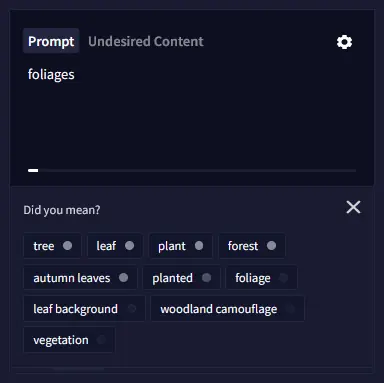
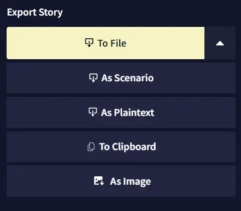

NovelAI上手记：当AI画师和AI编剧同时住进了一个订阅账户
花了一周把NovelAI的图像生成和故事写作两条线都踩了一遍坑，说说Opus档位值不值、哪些功能一上手就喜欢、哪些地方让我差点放弃。
说实话我是冲着AI画二次元老婆去的NovelAI官网，结果最后在故事创作编辑器里耗的时间比出图还多——这大概就是NovelAI最分裂也最有趣的地方：一个订阅账号里塞了两套气质完全不同的工具，一套教你当插画师，一套教你当桌游主持人。今天把我这一周的上手体验摊开说，踩过的坑也一并交代。
初印象：鹅图标和仪表盘里藏着两个世界
客户端从官方下载拿好之后，注册登录的流程没什么特别，邮箱加密码就行。但一进首页我有点懵——左侧栏顶部有只鹅图标，仪表盘上还有个图像生成的大卡片，加上一排故事入口按钮，信息密度比我预想的高出一截。后来才搞明白，鹅图标展开的是用户菜单，仪表盘是日常高频功能的快捷入口。

第一次看到这种双轨设计的时候我愣了几秒：市面上大多数AI工具要么只做图像要么只做文本，NovelAI把两者捏在一个订阅里，这本身就是个大胆的决定——意味着用户得同时接受两套不同的交互逻辑和参数体系。
核心体验一：图像生成——标签、步数和刷新就丢图的噩梦
我选了V5 Curated模型作为起步，NovelAI文档里说这个模型数据集干净、风格稳，不容易翻车。确实如此。输入框里打标签时会弹出联想提示，每个标签旁边有个小圆点，圆点越实说明模型越"认识"这个词——这个细节让提示词的反馈感比我用过的其他工具强太多，我可以一眼就知道哪些标签是模型真正能理解的，哪些是我自己脑补的。

但我必须说，刷新页面就丢图这个设计，是我这一周最想骂娘的地方。第一次出了四张不错的图，习惯性地按了F5想看看加载状态——结果历史栏直接清空，一张不剩。后来才知道，NovelAI的图像是会话级缓存，不保存就蒸发是设计如此。保存图标在历史栏每张图的右上角，长得不太显眼。我花了整整一天才养成每次出完图立刻点保存的条件反射。
分辨率和批量张数的联动也是门学问。Small档一次最多出6张，Normal和Large是4张。Opus档位免费出图只在单张时成立，勾了多张就全扣Anlas——我一开始没注意，批量撒了一轮网之后发现额度掉得比预想的快得多。后来学会了先小图6张抽卡找构图，固定种子之后再单张精修，成本立刻降了下来。
核心体验二：故事创作——Editor V2和导出的五种秘密
图像玩了两天之后我把注意力转向了故事编辑器。第一感觉是功能全得离谱，设定集、记忆模块、 Lorebook（知识手册）、场景占位符，这些东西堆在一起看起来像个文字冒险游戏的开发工具而不是AI聊天框。
Editor V2是必须开的版本，旧版Editor V1功能缺失、编辑区卡顿，如果你发现自己的界面跟教程里的不一样，先检查一下是不是还在V1。

故事导出给了五种格式，我挨个试了一遍：To File（.story）是完整备份，但我发现它会把所有重摇的废稿分支也打包进去——给朋友看之前必须先Trim Story或Flatten Story清理一下，不然尴尬。As Scenario（.scenario）最有意思，支持自定义占位符，导入的人可以填自己的名字和选项，相当于把故事变成了可交互的文字冒险剧本。As Image（截图设计器）能把故事片段排版成好看的作品卡，发社交平台晒稿特别方便。
还有个保命按钮我必须提：用户设置里的Download All Stories，一键打包账户里所有故事为zip。我在FAQ样本里看到有用户因为重置密码导致远程故事丢失的案例，所以现在每月一次把这个动作变成了固定习惯。
订阅和计费：Opus到底值不值
我入的是Opus档位。说实话免费单张的额度对轻度玩家来说够用，但真正让我觉得值的是无限的故事生成次数——毕竟我在故事编辑区耗的时间远超过图像生成。Anlas点数是图像侧的通用货币，订阅结束会清零，这一点要提前有预期。
有个细节值得提：升级订阅是按剩余周期补差价，账户页直接操作就行，不用取消重订。但一个身份只能一份订阅，多账号购买官方不管售后——别问我怎么知道的，踩过一次。
适合谁，不适合谁
如果你的需求是AI辅助创作二次元插画，NovelAI是目前体验最完整的一档。标签联想的圆点反馈、V5系列模型的稳定性、图像编辑工具链（增强放大、风格迁移），这一套下来出图效率比纯标签式的竞品高不少。
如果你想用AI写可交互的故事或桌游剧本，NovelAI的故事编辑器是被严重低估的武器。Lorebook配合场景占位符能做出相当复杂的文字冒险体验，导出的.scenario格式让分享和再创作的门槛极低。
但如果你只是想偶尔出几张图当桌面壁纸，或者写点简单的AI聊天记录就好，那Opus订阅对你来说可能偏重了——毕竟它的学习曲线比单功能工具陡不少，两套系统同时上手确实需要点耐心。
还有一点：丢图和丢故事的风险是真实存在的，NovelAI把数据安全的很大一部分责任推给了用户自己。保存习惯、定期全量导出、别忘密码，这三件事少做任何一件都可能踩坑。
这一周用下来的感受是，NovelAI不像是一个"AI工具"，更像是一个小型创作平台——图像和文本两条线各自成熟，捏在一起又产生了一些奇妙的化学反应。鹅图标背后藏着的东西，比我最初想象的要多得多。如果想深挖参数细节，相关整理好的资料在GitHub、Gitee和GitCode上都能找到，选哪个随你习惯。